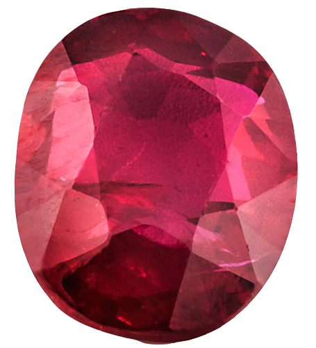

Legends say that there was a powerful wizard who helped save the kingdom and during this time, he managed to find a magical gem. This gem had the ability to grant you any wish you desire but however one day, the king used the gem to gain unimaginable wealth and banished the wizard so that he could never get the gem back.
But before he was banished, he swapped the gem with a fake and he ran away from kingdom with the real gem, his last reported sighting was him running into the woods in the dead of the night. The king offered a bounty for anyone to find the wizard and bring him back for execution but however, adventurers have used this as a way to find the gem and use it for their own personal gain.
But nobody has been able to find the wizard and the gem....
... until now.
